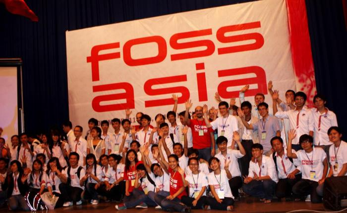

Schedule '11

The main topics of FOSSASIA 2011 are all related to Free and Open Source Software with a track for Mobile Solutions, Web Technologies, Operating Systems and Applications, and Women in IT.
| Day | Time | Event | Location |
| Thursday, Nov. 10 | 20.00 | Pre-Meeting | The Spotted Cow Bar111 Bui Vien, dist 1. HCMC (opposite to Happy Inn, closed to Pham Ngu Lao & De Tham / Google Maps) |
| Friday, Nov. 11 | 9.00-17.00 | Info Day (15-20 min presentations about projects and set up of info tables) | Van Lang University, Campus 2 (Theatre Hall) |
| Evening | Hack Sessions | City Cafe to be decided | |
| Saturday, Nov.12 | 9.00-17.30 | Community Day (keynotes, talks, workshops) | Van Lang University, Campus 2 (Theatre Hall and Seminar Rooms) |
| Evening | Social Meet Up | Location in the city to be announced | |
| Sunday, Nov. 13 | 9.00-15.30 | Mekong Excursion organized by tour company | Mekong Delta |
Schedule Friday 11. November 2011 | ||||||
Time | Topic and Project | Speaker | Title/Organization | |||
08:30 | Welcome – Hong Phuc Dang & Lilly Nguyen | |||||
8:35 – 8:45 | IT in University Education | Dung | Nguyen | Van Lang University, President | ||
8:45 – 8:55 | New Open Technologies and Opportunities for Developers | Mario | Behling | MBM, Managing Director, Germany | ||
8:55 – 9:10 | Open Source in Vietnam | Phuc | V. Nguyen | Asia Institute of Management and Technology | ||
9:10 – 9:30 | Open Cambodia | Chantra | Be | Social Software Specialist, Cambodia | ||
9:30 – 9.50 | Undercover UXO, a Land Mine Risk Education Game for Children | Nancie | Severs | One Laptop per Child, USA | ||
9:50 – 10:10 | Lubuntu – Faster computing with less powerful hardware | Julien | Lavergne | Head Developer lubuntu, France | ||
10:10 – 10:30 | Debian Blends: Make your own 'blended' Linux distribution | Jonas | Smedegaard | Debian Developer, Denmark | ||
10:30 – 10:50 | Linux as a Real-Time Operating System | Hong | Tran Duc | Linux Developer, Vietnam | ||
10:50 – 11:10 | Achievements of applying the open source software at Van Lang Uni | Vinh | Nguyen | Van Lang University, IT Department | ||
11:10 – 11:30 | Open Source and Microsoft | Justin | Lee | Software Development Consultant (freelance) | ||
11:30 – 11:50 | UNESCO and the Free Software Community | Davide | Storti | UNESCO, Open Suite Team France | ||
12.00-13.30 | Lunch Break | |||||
13:30 – 14:00 | LibreOffice on Smartphones | Hưng | Nguyễn Vũ | Libre Office Project, Vietnam | ||
14:00 – 14:20 | Strategy to make money on free mobile apps | Binh | Tran | App developer, Vietnam | ||
14:20 – 14:40 | Phonegap, App development with web technologies | Liem | Vo | App developer, Tech Propulsion Lab, Vietnam | ||
14:40 – 15:00 | Creative Mobile Technologies from Vietnam | Ian | Morrison | GKIM Vietnam, Founder | ||
15:00 – 15:20 | Android Development for postal companies | Thong | Tran | App developer, MBM, Vietnam | ||
15:20 – 15:30 | Using Mobile Technologies in DHIS Project | Long | Ngo Thanh | App developer, Vietnam | ||
15:30 – 15:40 | Mozilla Mobile Technologies | Hung | Nguyen | Mozilla Contributor, Vietnam | ||
15:40 – 16:00 | Giới thiệu ngắn về TeX | Anh | Huynh | Developer, Saigonlug member | ||
16:00 – 16:20 | LaTeX và Đại số máy tính (LaTeX and Computer Algebra System) | Son | Nguyen | Professor and Book Publisher, Vietnam | ||
16:20 – 16:40 | Hong Phuc Dang & Lilly Nguyen, End Notes and Outlook for Workshops on Saturday | |||||
Schedule, Saturday Nov. 12 | ||||||||
Time | Main hall | Room C408 | Room C409 | Room C508 | Room C509 | |||
8:30 – 9:00 | Hong Phuc Dang & Lilly Nguyen, Saturday Workshops Overview | |||||||
9:00 – 12:00 | Women in IT Meet up | Drupal – Web Development | Lubuntu for Development | Agile Software Development with TestLink and Redmine | ||||
Hong Phuc Dang | Sven Berg Ryen | Julien Lavergne | Nguyen Vu Hung | |||||
Open Source Enthusiast, Vietnam | Drupal Developer, Norway | Lubuntu Developer, France | Libre Office Project Vietnam | |||||
12.00 – 13:00 | Lunch Break | |||||||
13:00 – 16:00 | Yii – Web Development | Shape Debian for your custom needs | Android Development with Phonegap | |||||
Le Kien Truc | Jonas Smedegaard | Tran Quang Thong | ||||||
Ubuntu Vietnam | Debian Developer, Denmark | MBM Mobile Developer | ||||||
16:00 – 16:15 | Hong Phuc Dang & Lilly Nguyen, Closing Notes | |||||||
FOSSASIA 2011 Tracks
a) Mobile solutions
* Android, MeeGo, Chrome OS, Symbian, Bada, OpenWrt and embedded Debian
* Frameworks and SDK including Phonegap
* Lightning talks with app presentations
c) Web Technologies
* Frameworks
* CMS
* HTML5
* Ruby on Rails, Python, PHP
d) Operating Systems and Applications
* new interface design and lightweight trends with KDE, GNOME, LXDE and XFCE
* Package design and development
b) Women in IT
While most Open Source and Free Software projects are based in Western countries there is an increasing number of projects from Asia. Women are also becoming a stronger force in the IT community. The FOSSASIA team strongly encourages the participation of young women and achieved this goal with an astounding participation of women in 2009 and 2010 – more than half of all attendees were women. How can we make this trend sustainable and support the flow of women into the technology companies?
Tracks
We plan to have up to 4 sessions in parallel with approximately for FOSSASIA 2010. Based on our vision, FOSSASIA 2011 will cover the following areas:
| Track | Topics |
| Track 1: Mobile Solutions |
|
| Track 2: Web Technologies |
|
| Track 3: Operating Systems and Applications |
|
| Track 4: Fostering the Asian community and Women in IT |
|